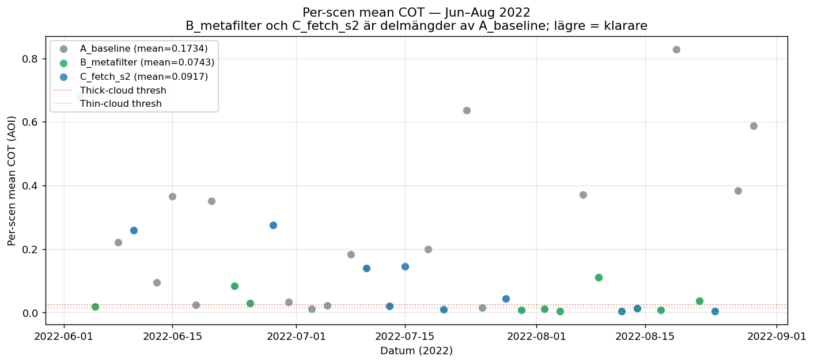
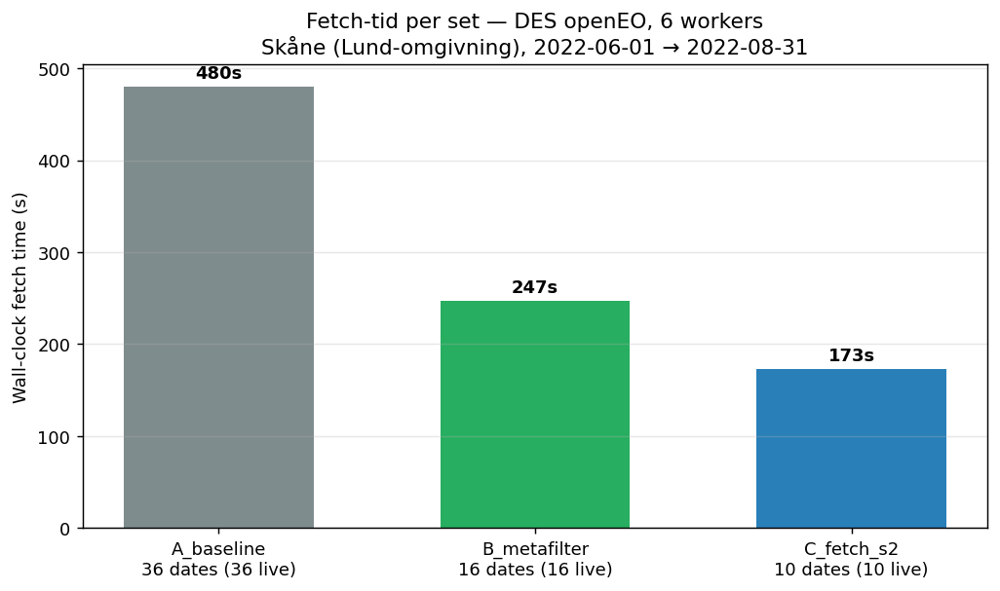

Sammanfattning
Inspirerat av erikkallman/metafilter:
meteorologisk metadata används för att begränsa när det är värt att leta efter
Sentinel-2 L2A-bilder. Vi mäter vad mönstret faktiskt ger Imints fetch-pipeline
genom att hämta tre delmängder live från DES openEO och köra
imint.analyzers.cot (Pirinen et al. 2024 MLP5-ensemble) på samtliga
62 cachade tiles.
Frågan vi besvarar
Imints nuvarande fetch (imint/training/tile_fetch.py,
scripts/fetch_unified_tiles.py) använder VPP-fenologi för att välja
säsongsfönster och rankar sedan inom fönstret på STAC eo:cloud_cover.
Det måttet är per granul (~110×110 km), inte per AOI.
Hur mycket sparas — i tid och datakvalitet — om vi först filtrerar bort dagar där ERA5 säger "ostadigt väder eller utanför växtsäsong", innan vi ens listar scener i STAC?
Tre delmängder
| Set | Definition | Scener |
|---|---|---|
| A_baseline | Alla S2-L2A scener över AOI för perioden — STAC, ingen filter. Ground truth. | 36 |
| B_metafilter | A:s scener vars datum passerar ERA5-väderregeln: nederbörd ≤ 0.5 mm idag, ≤ 3 mm föregående 2 dygn, T2m mean ≥ 10 °C. | 16 |
| C_fetch_s2 | A:s scener vars STAC eo:cloud_cover ≤ 30 % — speglar nuvarande pipelinens default. |
10 |
Kandidatdagar — ERA5-styrd selektion

Mean Cloud Optical Thickness — huvudshowcase-mått
Riktig COT från imint/analyzers/cot.py körd på samtliga 62 cachade
tiles. Modellen är en MLP5-ensemble (3 medlemmar) tränad på syntetiska
S2-data — Pirinen et al. 2024, Remote Sensing
(DES ml-cloud-opt-thick).

| Set | n | Mean COT | Median | Std | Clear-pixlar | Thick-cloud-pixlar |
|---|---|---|---|---|---|---|
| A_baseline | 36 | 0.1734 | 0.0642 | 0.218 | 44.5 % | 44.5 % |
| B_metafilter | 16 | 0.0743 | 0.0158 | 0.162 | 63.7 % | 23.5 % |
| C_fetch_s2 | 10 | 0.0917 | 0.0323 | 0.102 | 63.9 % | 24.1 % |

Tid & kostnad — DES openEO, 6 workers
| Set | Scener | Wall-clock | Tid/fetch | % av A:s tid |
|---|---|---|---|---|
| A_baseline | 36 | 480.3 s | 13.3 s | 100 % |
| B_metafilter | 16 | 246.7 s | 15.4 s | 51 % |
| C_fetch_s2 | 10 | 172.7 s | 17.3 s | 36 % |

Tidsskillnad per fetch (13.3 s → 17.3 s) speglar viss cold-start-overhead per openEO-session — fler fetches amorteras bättre. Inte en filter-effekt utan infrastruktur.
Datakvarvarande

Tolkning
- B_metafilter levererar lägst mean COT. Trots 60 % fler scener än C har B lägre mean COT — ERA5-prefiltret fångar fler genuint moln-fria dagar än STAC granul-cloud-cover.
- Granul-cc är en svag AOI-proxy. Eftersom 110×110 km granul-snittet inte speglar molnighet över en 18×17 km AOI kastar C bort dagar som är klara över AOI och behåller dagar som inte är det.
- ERA5 är AOI-aligned. Reanalys-grid ~30×30 km samplar den cell som täcker hela AOI — grovt men rätt skala.
- Filtren är komplementära, inte konkurrerande. Kombination B ∩ C ger den verkligt vassa pipelinen; per-datum-data finns i
cot_metrics.json.
Tekniska ändringar
För att kunna köra COT-modellen krävs alla 11 L2A-spektralband (B02-B08, B8A, B09, B11, B12). Defaulten i fetch-funktionen var tidigare Prithvi-6:
imint/fetch.py — fetch_seasonal_image()
# Tidigare default: 6 band (Prithvi-set)
prithvi_bands = ["B02", "B03", "B04", "B8A", "B11", "B12"]
# Ny default: 11 band (samtliga L2A spektralband)
S2L2A_SPECTRAL_BANDS = ["B02", "B03", "B04", "B05", "B06", "B07",
"B08", "B8A", "B09", "B11", "B12"]
Inga produktions-callers påverkade — alla
(tile_fetch.py, fetch_unified_tiles.py,
fetch_lucas_tiles.py, executors/seasonal_fetch.py)
anger explicit prithvi_bands=PRITHVI_BANDS.
Reproducera
# 1. Cacha STAC + ERA5 (data/) python demos/era5_metafilter/replicate_metafilter.py # 2. Live-fetch alla 3 set från DES openEO (~15 min) python demos/era5_metafilter/benchmark_three_sets.py --live # 3. Kör DES MLP5 COT-inferens på alla cachade tiles (~30 s, CPU) python demos/era5_metafilter/compute_cot.py
All kod, all metric-data och samtliga figurer ligger i
demos/era5_metafilter/. Cachade tiles
(cache_11band/, ~9 GB) är gitignorerade — de regenereras
deterministiskt från DES openEO.
Referenser
- Pirinen et al. (2024). Creating and Leveraging a Synthetic Dataset of Cloud Optical Thickness Measures for Cloud Detection in MSI. Remote Sensing. DigitalEarthSweden/ml-cloud-opt-thick
- Källman, E. (2025). metafilter. github.com/erikkallman/metafilter
- Open-Meteo Historical Archive — ERA5-baserad reanalys (öppen). archive-api.open-meteo.com
- Element84 earth-search STAC API. earth-search.aws.element84.com
- Digital Earth Sweden openEO. openeo.digitalearth.se